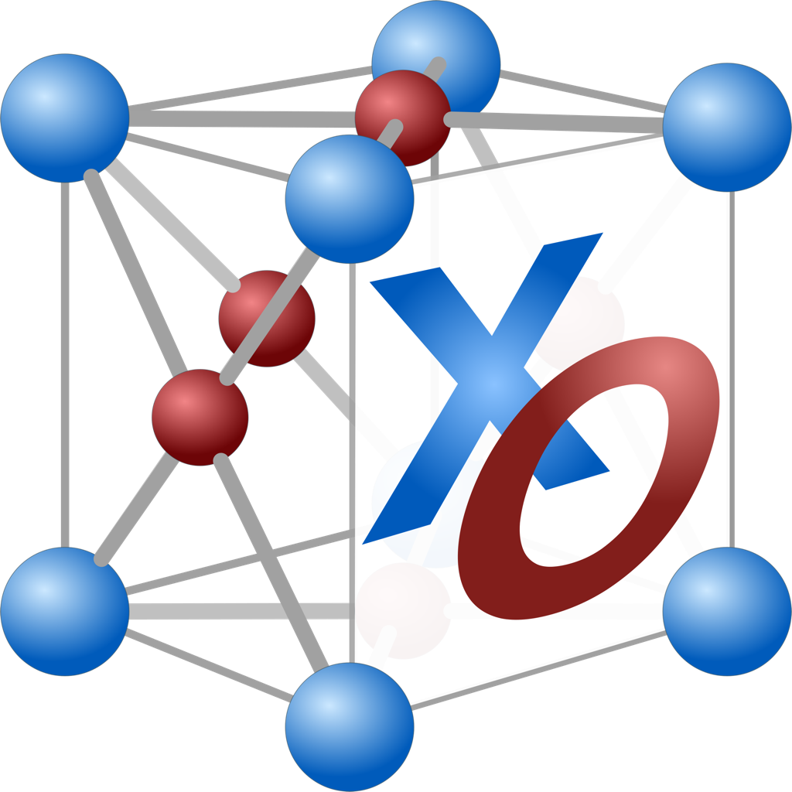

  <div class="navbar navbar-inverse navbar-fixed-top">
    <div class="navbar-inner">
      <div class="navbar-header">
        <button style="border: 1px solid grey;border-radius:0px;" type="button" class="navbar-toggle" data-toggle="collapse" data-target="#myNavbar">
          
          <span style="color:grey;font-weight:bold;font-size:19px;vertical-align:text-bottom">Menu</span>
        </button>
      </div>
      <div id="myNavbar" class="collapse navbar-collapse">
        <ul class="nav navbar-center">
          <li><a href="index.html">Home</a></li>
          <li><a href="xtalopt.html">XtalOpt</a></li>
          <li><a href="download.html">Download</a></li>
          <li><a href="pub.html">Publications</a></li>
          <li><a href="resources.html">Resources</a></li>
        </ul>
      </div>
    </div>
  </div>
